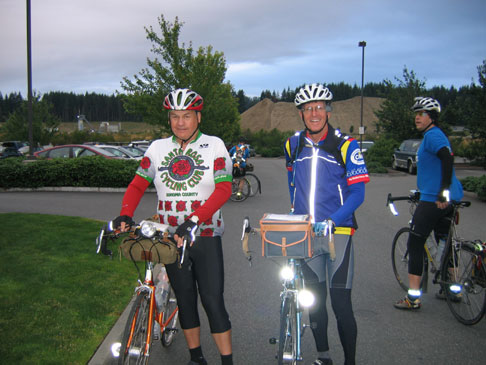
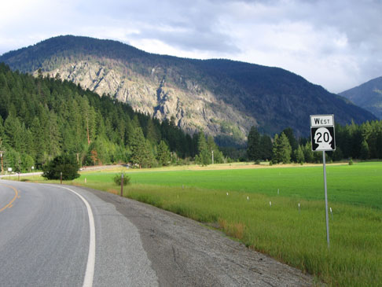

Volume 10 Issue 5 - August 2005
Ride Summary: Summer Populaire
Ride Summary: Summer 200k
Ride Report: Eric Vigoren's Summer Populaire
Ride Summary: Cascade 1200
Ride Report: Amy Pieper's Summer 200k
Ride Report: John Russell's Cascade 1200
NOTE: Please send any content for the newsletter to Patrick Gray
- SIR has two brevets coming up in August. First up is the "Packwood 3 Volcanoes" 300k on August 6th. Next is the "White Pass-Chinook Pass-Cayuse Pass" 400k on August 27. Both brevets should offer up plenty of challenges.
- Congratulations to SIR's 5 finishers (of 5 starters) on the Gold Rush Randonnee 1200k. Paul Johnson 88:08, John Kramer 82:11, Ray McFall 86:45, Dave Read 82:11, Duane Wright 88:01. Sounds like it was a tough ride in the heat. We look forward to hearing their stories!
Paul Johnson
After a rainy Friday, the sun shone bright as 20 hardy souls assembled in the parking lot of the Fish Tale Brew Pub in Olympia Washington for the summer Populaire. The field was mixed about 50/50 members and non-members. There were about a half dozen first time brevet riders.After brief instructions the riders were away. At the first control in Rainier, they were joined by 4,000 other riders heading south on Highway 507 towards Portland. The riders made their way south to the Johnson Creek turnoff, none was persuaded by the pack mentality to continue on to Portland. They briefly joined the STP crowd once again in Tenino. Continuing south and west they made the turn onto Case road and headed back to the start.
The weather was fair through the day and all finished well within the time limits. There were no accidents or injuries and no one accumulated any Bonus kilometers. Time to get ready for the South Sound 200k, starting in Tumwater on July 23rd.
Jan Heine
41 Starters
39 Finishers
2 DNF (One apparently finished the ride on time but did not want to turn in a card)
There were no accidents reported, penalties or other incidents.Despite the initial forcast a few days prior, it turned out to be a great day for riding. Cool in the morning & heating up to nice yet tolerable temperatures in the afternoon. Despite the mixup in starting times it seems like a great time was had by all who attended.
Eric Vigoren
After gusty winds and rain all day Friday, who would have expected the near perfect weather conditions for the running of the Populaire out of Olympia on Saturday July 9th? Paul Johnson warmly greeted all of the riders as they showed up at the Fishbowl Pub parking lot to register for the ride. Susan France had come up from Portland to check out some unfamiliar roads, and there were several new faces riding in their first randonneur event. More than a few people were musing about what in the world Duane Wright was doing riding on the I-5 shoulder on his Peugot fixed gear. Turns out he was just riding STP the wright way.
With the pre-ride formalities done, we set off when the clock struck nine. I chatted with David Huelsbeck as we rode out of town passing through or waiting at the many controlled intersections. As we waited to turn onto the Yelm Highway, Peter Beeson rolled up along side of us. I had studied the route sheet and map so was familiar with the course, which came in handy as we nearly took the wrong arm at the Y intersection of Rich and Rixie roads. We worked our way through East Olympia over to the pleasant, tree shrouded Rainer Road as it climbs gently through Fort Lewis. Suddenly Peter's morning coffee must have kicked in because he bolted off at 23 mph. I was content to let David and him pull away but not out of sight. Only a little more than a half hour into the ride, I wasn't yet sure how long I wanted to maintain that pace. The surge proved temporary and we cruised downhill toward the Rainier control together in under an hour.
With our cards signed we entered into the morass of STP riders on SR-507. It was as if we were amidst a herd of young antelope with a predator in chase somewhere behind. Riders were weaving around one another and darting in an out of pace lines. A peleton this was not! No wonder Duane was over on I-5. David had gotten sucked into the throng but soon opted to pull out and ride to their left. Whooop, whooop, whooop. "Looks like David's in trouble," Peter declared as we watched an SUV patrol vehicle pull up along side David, announcing itself with short bursts from its siren. Nope, turned out they were just handing off a banana to a fellow SPD officer riding in uniform.
After a short (long?) two miles we turned off onto the quiet of Johnson Creek Road. Ahh, this was nice. The road traverses small, rolling hills before a mild descent to the not-too-secret control at Skookumchuck Dam. On the route sheet that I had prepared I listed intermediate time points for completing the ride in 3:45. We were already twelve minutes ahead of that pace. Now we began to truly work together. As I headed our little paceline back down the road toward Tenino, I could not help but think of the boys in France cruising along at half again our speed.
The passage through Tenino provided us with another short interlude with the STP riders. Paul's cue sheet said that the turn onto 183rd is easy to miss, as indeed it is. The road sign is aimed toward some pastures, so I guess at least the cows know where they are. A right turn onto Case Road and we off toward the next control with the wind mostly at our back. A couple miles out from the Scott Lake Store control, David says, "You know, if we rotate the line more and pick up the pace some we could make it back in 3:15." Peter began having flashbacks to this year's fleche when David made a very similar pronouncement. Eleven miles, twenty-five minutes, some quick math told me that goal was somewhat unlikely, especially considering the stoplights to come. But heck, why not, "Go ahead, David, you take the lead," I replied with a smile.
The lights leading back into Olympia did not disappoint. If nothing else, they gave us static moments during which to contemplate our pint choice back at the pub. Or at least, that's where my mind was. A couple final turns and we pulled into the parking lot with an elapsed time of 3:23.
Inside the Fishbowl we gathered a few tables together and placed our orders waiting for the others to arrive. I enjoyed the socializing and David and Peter were great riding companions. This is why I like randonneuring. Oh, and my pint choice? A Fish Tale Organic IPA, of course.
Terry Zmrhal
On the last weekend of June, the Seattle International Randonneurs hosted the inaugural Cascade 1200 - a giant loop through Washington state. It seems there was almost unanimous agreement by riders and volunteers that it was a great success! At the start were 73 riders aiming for the 1200k and nine riders aiming for the 1000k.
The Cascade 1200 featured a group-oriented style of 1200 km riding which targeted common overnight stops each night. While this allowed SIR to concentrate volunteers and resources at those overnights, it benefited the riders a great deal since it allowed riders to catch up each night and to re-group and start again together in the morning. Most riders enjoyed the common overnight stops and liked having a set endpoint for each day.
The route was chosen to highlight the diversity of Washington state. Riders experienced the intense sun and heat of the Rattlesnake Hills to the chilly rain and descent off Rainy Pass; a rippin tailwind along the Columbia River to bouncing headwinds that slowed riders to a crawl and threw them all over the road. Not to mention stunning views of Mt Rainier, Mt St Helens, Mt Hood, and Mt Adams to the desert-like feel of the Rattlesnake Hills and prehistoric look of the old riverbed of the Grand Coulee. If you didn't like the scenery or the weather, just ride a few more miles and it would change again.
The start brought overcast skies and a 50 mile journey through the edges of Seattle suburbia before finally heading into the quiet roads of rural Washington. A bit of scattered rain in that stretch assured the riders they were indeed in rainy Washington. By early afternoon the skies cleared with perfect timing as riders headed through the Gifford Pinchot Forest on the east side of Mt St Helens. Along the 80 miles of forest service roads, riders encountered few cars and some magnificent views of Mt St Helens and Mt Rainier - again verifying for riders they were indeed in Washington. Not to be forgotten are two big climbs of Elk Heights at over 4000 feet and Oldman Pass at over 3000 feet. The end of that stretch brought the riders to the first overnight at the Wind River Middle School in Carson, the farthest point south on the route. All the amenities were here - indoor bike parking, lasagna for dinner, wrestling mats for sleeping, and showers. Oh yeah - shower heads made for 12 year olds!
While the first day was hard with 220 miles and 13,000 feet of climbing, the second day was expected to be harder. It began with a tease - wonderful tailwinds along the beautiful Columbia Gorge. Most notable along this stretch was Mt Hood sticking straight up over on the Oregon side. Finally turning north, the riders followed the Klickitat River through Klickitat and beyond to Goldendale. This stretch along the river is remarkable as one wonders where they are. It's a mixture of Western Washington lushness and Eastern Washington dryness and scrub. Soon the rider is left behind as riders ascend onto a grassy prairie of the Klickitat Valley. It's a remarkable change of scenery in such a short span - riders are now in Eastern Washington! A little farther along riders are rewarded with incredible views of Mt Adams. A few more windy miles and rollers and riders have reached the first control of the day at Goldendale. From there the rest of the day is hot and barren and windy. It's easy to believe you aren't in Washington anymore. The deceptive climbing into the Rattlesnake hills had riders stopping to check their bikes over for flat tires or rubbing brakes. The end of the second day was spent at the Quincy High School where riders again enjoyed hot showers, wrestling mats for sleeping and chili for dinner.
With only 170 miles on the third day, it would seem to be an easy day, but after two hard days of riding, most riders legs tired and slugged it out this day. Usually Eastern Washington has a bright sun overhead, but not today. Riders seemed to enjoy the cooler temperatures and intermittent sprinkles after the heat of day two. The route continued to head north along the Columbia River, finally turning east and heading over Loup Loup Pass at over 4000 feet. Unfortunately many riders descended in rain meaning they didn't get to let it loose on this fairly open descent. Once to the bottom riders had just 20 miles to Mazama for the final night. Settled at the base of the North Cascades, Mazama is wonderfully quiet and peaceful - a perfect place for the third night. Riders were treated to regular rooms sharing beds and their own bathrooms!
The final day began with an incredible buffet breakfast complete with pancakes, eggs, cereal, yogurt - you name it, it was out there. Most riders left by 6am to start the 3500 foot climb to Washington Pass at 5400 feet followed a few miles later by Rainy Pass at 4800 feet. Rainy Pass lived up to its name this year with 45 degrees and rain chilling riders along the 20 mile descent. A wonderful SIR stop halfway done served up popular hot chocolate and hot soup.
Everyone finished within about seven hours of each other at the gracious Holiday Inn Express in Monroe. Having everyone finish so close together meant lots of cheering and clapping for everyone that came in from friends, family, and other riders. It was a marvelous way to finish!
Throughout the event riders commented on the challenges of the course, many agreeing it to be among the hardest 1200k rides. Most altimeters registered between 37,000 and 42,000 feet of climbing. Believe it or not, no one said it should be any easier! While the terrain was certainly a challenge, riders enjoyed more than 17 hours of daylight each day as the event was strategically held during the longest days of the year.
Most riders commented on the exceptional support provided by the volunteers along the course. There were several instances of volunteer heroics that saved the ride for more than one rider. Even the volunteers seemed to be having fun. I asked Mark Thomas how his wife, Chris, enjoyed providing support out in the Rattlesnake Hills. One would think that with the emptiness where Chris was set up, it wouldn't be all that much fun; on the contrary Chris said she had a blast - what could be better than having tons of fit guys riding up to her and calling her an angel of mercy complete with ice, shade, and cold drinks!
In the end, 61 riders finished the 1200k and seven finished the 1000k. Among those who finished were 24 rookies who had never ridden a 1200k or 1000k before!
SIR would like to thank all the volunteers all along the course; family and friends along the course and at the finish; and the wonderful facilities and hosts at the overnights and various other stores and restaurants that greeted us.
Look for another edition in the near future!
Check the Cascade 1200 website (www.cascade1200.com) for more rider accounts and photos.
Amy Pieper
It was great to be greeted by a warmer and drier than expected morning and many familiar faces at the start of the 200k brevet in Tumwater on Saturday, July 23rd. There were a number of new faces too which was nice to see.
My plan was to ride an easy pace enjoying the day and saving some energy to preview our 300k course the next day. Initially that worked well but soon the pack, which was staying together nicely, started to accelerate and I hung in there with them. We were moving nicely along the quiet roads until the first control at Rainier. My "buddies" Mark and Peter took off and Robin and I chased them down. We began to get the hint when they dumped us again after Centralia. Hmm, maybe I'd better redefine "buddies"???
Out of Centralia Robin and I hooked up with a group that began to move along VERY quickly. I looked up the line and started identifying the members. Let's see, there's Fred Mulder, Peter Beeson, Dave Huelsbeck, all fast guys, and there at the back casually sitting up and chatting is Chris Ragsdale. Uh oh, I'm in major trouble here! I do NOT belong with these guys. Luckily about that point we passed Frank Cordell and Jon Muellner. I called out in near distress asking if they were going to jump in the paceline or continue at a slower pace. I didn't get a clear answer so I hung on a while longer. As soon as we hit the smallest rise in the road I was done. I swung out of the line and luckily Frank came along with me so we could ride along together at a more reasonable pace. Now I was able to appreciate the beautiful rolling countryside!
At the secret control I hooked back up with Robin and from then out rolled along nicely and even worked together with Tom Norland and Ryan Schmid for a while (before the hills killed me again that is)! Oh, and my "buddies"??? They would hang out at each control just until the moment I pulled in and then ride off together with Mark blowing raspberries at me. Now is that proper randonneuring spirit I ask you??? After the ride we all made up over beers and burgers at the Fishbowl Brew Pub in Olympia. A great end to a good day of riding.
John Russell
"S.I.R.-BON ROUTE" was etched in the snow bank at the approach to Washington Pass in the northern Cascades. I had to agree! The first three days of the Seattle International Randonneurs inaugural Cascade 1200 had been fantastic and there was still a whole day of riding ahead. It was Tuesday morning - the end of June.
Last night's relentless, steep climb over Loup Loup Pass with rain and swirling mist was behind. The worst was over. There would be no more late night rides. I had a two-hour nap and felt remarkably rested. This was it. Make the controls. Avoid wrong turns. Stay awake.
 Bill Mattinson (l) and John Russell
Photo: John RussellAfter a long wait for road construction below Rainy Pass, there was a downhill run into Marblemont, the first control of the day at 74 miles. Along the way someone had painted Bigfoot prints across the road in several places. Rain sprinkles persisted through the afternoon as I went on toward Granite Falls, the second control at 68 miles.
On one long straightaway through the forest an animal sauntered out on the road ahead. At first I thought it was a dog getting ready to chase. When its long tail stretched out and it suddenly crouched I realized that was a young, dark coated puma. It vanished at my approach. For miles I rode and wondered, "Was that a vision or did I really see it?"
I flatted after a metal bridge. That was real enough to keep me pedaling my Romulus on in earnest. The final stretch into Granite Falls was along the Sauk River on an old route down Jordan Road. I enjoyed the homes and bridges; but, as usual for this ride, there were climbs right up to the control.
As darkness gathered I set out on the final 22 miles knowing there was a tricky labyrinth of back roads ahead. Fortunately, my ride partner Bill Mattinson and I had checked it out before starting last Saturday. Oncoming headlights made some turns difficult to see, but overall the route was more obvious than I remembered.
My thoughts kept going back to the highlights of the ride since 75 riders headed south out of Monroe almost 4 days before. The first day had light rain, wonderful tailwinds and two mountain passes before the overnight in Carson. We arrived around 03:00 in time to sleep a little before heading out to the Columbia River Gorge. We had a bright moon as we made our way late that first night. The effect was magical with low lying clouds and the sound of rushing water everywhere.
>From Carson the route headed east along the gorge with its tunnels and trains. It turned up the Klickitat River drainage and over to Goldendale. We had a very warm day of rolling hills, grand vistas and big skies. The second day was again more than 200 miles and took its toll on our legs. Fortunately by being later we avoided the strong headwinds other riders reported.
Bill and I crossed the Columbia River near the Hanford nuclear energy site. We joked about mutant frogs croaking in the dark and flying saucers and other things that seemed terribly funny at the time. It was a long second night. Coyotes sang to the moon. Other riders passed. Their lights were visible for miles.
Arrived at the second overnight control in Quincy around 05:00 and went to a motel for almost 3 hours of deep sleep. Not hearing the alarm I awoke in a panic! The next section became a 52-mile stage race. The success of the whole trip depended on my making the control at Farmer and things did not start out well. First, the road was closed for 20 minutes as a crew laid 3 miles of fresh chip seal to navigate. Then there was a wrong turn up a gravel road for 2 miles. Later as I searched for the turn to Moses Coulee, there was a traffic accident right in front of me. A pickup rear-ended an elderly couple's car when they stopped to turn left. It trashed their electric chair mounted on the back.
What could happen next? Well, there's always rain. Drenched, I reached the top of a climb and the coulee open up before me. I made it to Farmer with a half hour to spare. The lunch served by a friendly group of volunteers was fantastic. From then on the third afternoon was one of those great times on a bike we all treasure. It rained a little. The miles rolled by. I took a nap along the Columbia River on a picnic table under an overhead shelter. Later the rain became steadier and the skies darkened earlier than the other days. There was a quick stop at the Malott control before starting the climb to the last over night at Mazama.
 The Road Heading out of Mazama
Photo: John RussellDid I mention the road to Loup Loup Pass was long, steep and wet? That's an understatement. As I reached the summit I was amazed to see a small light. Then I heard a friendly voice, and out of the darkness came SIR volunteer Tom with water and words of encouragement. Now it was downhill, and then quiet vacation communities and empty streets until I reached the control at an inn tucked back in the woods.
All these images passed through my mind as I rode those final miles into Monroe just after 11:00 p.m. on the fourth and final evening. I had completed my first 1200 brevet. BON ROUTE. Merci SIR! Tailwinds.
| Date | Distance | Organizer | Route |
|---|---|---|---|
| August 6 | 300 km | ROBIN & AMY PIEPER | Packwood 3 Volcanoes |
| August 27-28 | 400 km | DON HARKLEROAD | Enumclaw/White Pass/Yakima/Chinook Pass/Cayuse Pass |
| September 17-18 | 600 km | BILL DUSSLER | Proposed route will be a North Cascades out and back from Arlington |
Paul Johnson, Peg Winczewski, Peter McKay, Amy Pieper, Mark Thomas, Terry Zmrhal, Jon Muellner, Greg Cox, Wayne Methner
Membership Fee:
$10 - full membership w/e-mail newsletter or
$15 - full membership w/printed newsletter.
Membership Address:
c/o Terry Zmrhal
9531 112th Ave NE
Kirkland, WA 98033
425-828-7818